File: 000150.gt.txt (if the image is defective, simply delete all Arabic text and the line will be excluded)
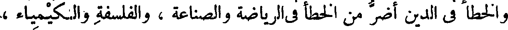
والخطأ في الدين أضر من الخطأ في الرياضة والصناعة ، والفلسفة والكيمياء ،
File: 000151.gt.txt (if the image is defective, simply delete all Arabic text and the line will be excluded)
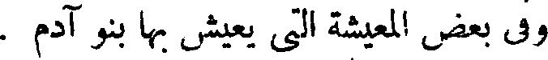
وفي بعض المعيشة التي يعيش بها بنو آدم .
File: 000152.gt.txt (if the image is defective, simply delete all Arabic text and the line will be excluded)
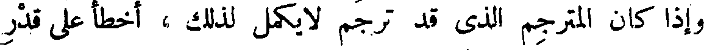
وإذا كان المترجم الذي قد ترجم لا يكمل لذلك ، أخطأ على قدر
File: 000153.gt.txt (if the image is defective, simply delete all Arabic text and the line will be excluded)
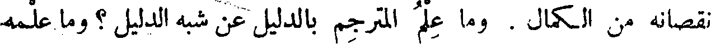
نقصانه من الكمال . وما علم المترجم بالدليل عن شبه الدليل ؟ وما علمه
File: 000154.gt.txt (if the image is defective, simply delete all Arabic text and the line will be excluded)
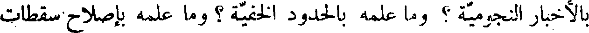
بالأخبار النجومية ؟ وما علمه بالحدود الخفية ؟ وما علمه بإصلاح سقطات
File: 000155.gt.txt (if the image is defective, simply delete all Arabic text and the line will be excluded)
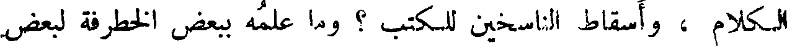
الكلام ، وأسقاط الناسخين للكتب ؟ وما علمه ببعض الخطرفة لبعض
File: 000156.gt.txt (if the image is defective, simply delete all Arabic text and the line will be excluded)
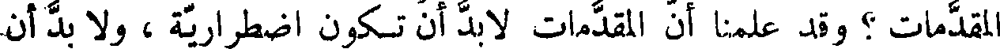
المقدمات ؟ وقد علمنا أن المقدمات لا بد أن تكون اضطرارية ، ولا بد أن
File: 000157.gt.txt (if the image is defective, simply delete all Arabic text and the line will be excluded)
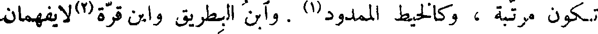
تكون مرتبة ، وكالخيط الممدود(1) . وابن البطريق وابن قرة(2)لا يفهمان
File: 000158.gt.txt (if the image is defective, simply delete all Arabic text and the line will be excluded)
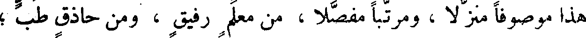
هذا موصوفا منزلا، ومرتبا مفصلا ، من معلم رفيق ، ومن حاذق طب ؛
File: 000159.gt.txt (if the image is defective, simply delete all Arabic text and the line will be excluded)
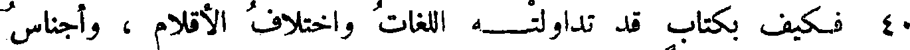
40 فكيف بكتاب قد تداولته اللغات واختلاف الأقلام ، وأجناس
File: 000160.gt.txt (if the image is defective, simply delete all Arabic text and the line will be excluded)
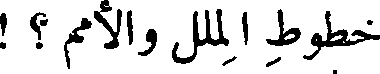
خطوط الملل والأمم ؟ !
File: 000161.gt.txt (if the image is defective, simply delete all Arabic text and the line will be excluded)
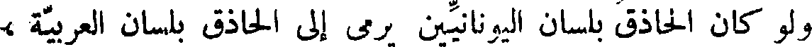
ولو كان الحاذق بلسان اليونانيين يرمي إلى الحاذق بلسان العربية ،
File: 000162.gt.txt (if the image is defective, simply delete all Arabic text and the line will be excluded)
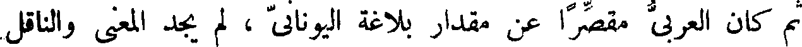
ثم كان العربي مقصرا عن مقدار بلاغة اليوناني ، لم يجد المعنى والناقل
File: 000163.gt.txt (if the image is defective, simply delete all Arabic text and the line will be excluded)
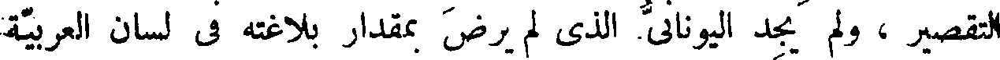
التقصير ، ولم يجد اليوناني الذي لم يرض بمقدار بلاغته في لسان العربية
File: 000164.gt.txt (if the image is defective, simply delete all Arabic text and the line will be excluded)
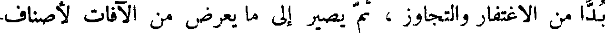
بدا من الاغتفار والتجاوز ، ثم يصير إلى ما يعرض من الآفات لأصناف
File: 000165.gt.txt (if the image is defective, simply delete all Arabic text and the line will be excluded)
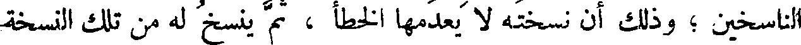
الناسخين ؛ وذلك أن نسخته لا يعدمها الخطأ ، ثم ينسخ له من تلك النسخة
File: 000166.gt.txt (if the image is defective, simply delete all Arabic text and the line will be excluded)
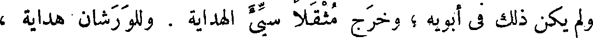
ولم يكن ذلك في أبويه ؛ وخرج مثقلا سيء الهداية . وللو رشان هداية ،
File: 000167.gt.txt (if the image is defective, simply delete all Arabic text and the line will be excluded)
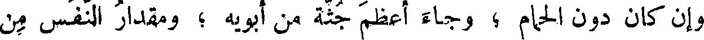
وإن كان دون الحمام ؛ وجاء أعظم جثة من أبويه ؛ ومقدار النفس من
File: 000168.gt.txt (if the image is defective, simply delete all Arabic text and the line will be excluded)
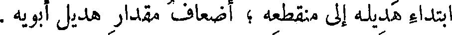
ابتداء هديله إلى منقطعه ؛ أضعاف مقدار هديل أبويه .
File: 000169.gt.txt (if the image is defective, simply delete all Arabic text and the line will be excluded)
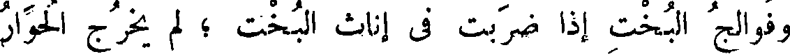
وفوالج البخت إذا ضربت في إناث البخت ؛ ولم يخرج الحوار
File: 000170.gt.txt (if the image is defective, simply delete all Arabic text and the line will be excluded)
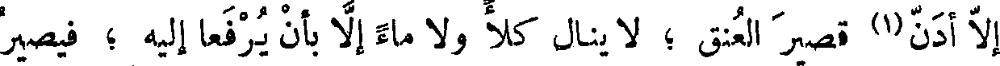
إلا أدن(1) قصير العنق ؛ لا ينال كلأ ولا ماء إلا بأن يرفعا إليه ؛ فيصير
File: 000171.gt.txt (if the image is defective, simply delete all Arabic text and the line will be excluded)
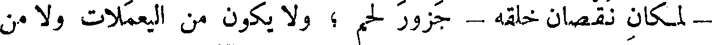
- لمكان نقصان خلقه - جزور لحم ؛ ولا يكون من اليعملات ولا من
File: 000172.gt.txt (if the image is defective, simply delete all Arabic text and the line will be excluded)
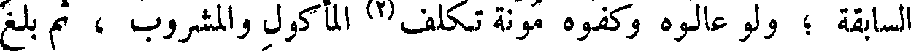
السابقة ؛ ولو عالوه وكفوه مؤنة تكلف(2) المأكول والمشروب ، ثم بلغ
File: 000173.gt.txt (if the image is defective, simply delete all Arabic text and the line will be excluded)
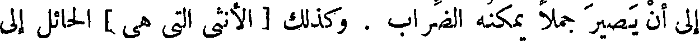
إلى أن يصير جملا يمكنه الضراب . وكذلك [ الأنثى التي هي ] الحائل إلى
File: 000174.gt.txt (if the image is defective, simply delete all Arabic text and the line will be excluded)
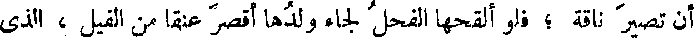
أن تصير ناقة ؛ فلو ألقحها الفحل لجاء ولدها أقصر عنقا من الفيل ، الذي
File: 000175.gt.txt (if the image is defective, simply delete all Arabic text and the line will be excluded)
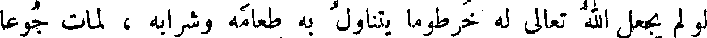
لو لم يجعل الله تعالى له خرطوما يتناول به طعامه وشرابه ، لمات جوعا
File: 000176.gt.txt (if the image is defective, simply delete all Arabic text and the line will be excluded)
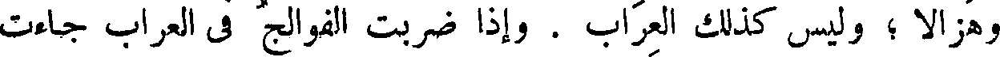
وهزالا ؛ وليس كذلك العراب . وإذا ضربت الفوالج في العراب جاءت
File: 000177.gt.txt (if the image is defective, simply delete all Arabic text and the line will be excluded)
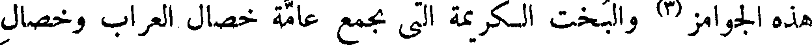
هذه الجوامز(3) والبخت الكريمة التي تجمع عامة خصال العراب وخصال
File: 000178.gt.txt (if the image is defective, simply delete all Arabic text and the line will be excluded)
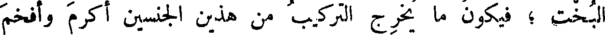
البخت ؛ فيكون ما يخرج التركيب من هذين الجنسين أكرم وأفخم
File: 000179.gt.txt (if the image is defective, simply delete all Arabic text and the line will be excluded)
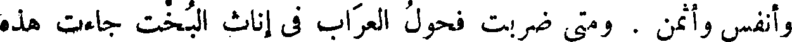
وأنفس وأثمن . ومتى ضربت فحول العراب في إناث البخت جاءت هذه
To Save: `Ctrl+s`, make sure to choose `Webpage, complete`!